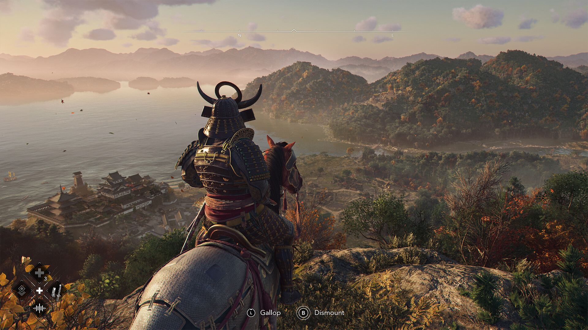

Overview

*Assassin's Creed Shadows* is the latest entry in Ubisoft's critically acclaimed *Assassin's Creed* series, and it is poised to redefine the action-adventure genre. Set in a meticulously crafted open world, the game seamlessly blends historical authenticity with cutting-edge gameplay mechanics. Players are transported to feudal Japan, where they will embark on an epic journey filled with intrigue, betrayal, and ancient conspiracies. With its rich narrative, immersive world-building, and innovative features, *Assassin's Creed Shadows* is a testament to the evolution of the franchise.
The game introduces a new protagonist, Hiroshi, a master assassin trained in the art of stealth and combat. Set during the tumultuous Sengoku period, the story explores the clash between powerful warlords and the rise of the shogunate. Players will navigate a world of political intrigue, forging alliances and uncovering secrets that could change the course of history.
Story

The story of *Assassin's Creed Shadows* is a gripping tale of revenge, loyalty, and the eternal struggle between the Assassins and the Templars. Players assume the role of Hiroshi, a highly skilled assassin who is drawn into a web of political intrigue and ancient secrets. The narrative is deeply rooted in historical events, offering a fresh perspective on the rise of the shogunate in Japan.
The game begins with Hiroshi's tragic backstory, which sets the stage for their journey. As the story unfolds, players will encounter a diverse cast of characters, including allies, enemies, and morally ambiguous figures. Each character is meticulously crafted, with their own motivations, backstories, and roles in the overarching narrative. The writing is top-notch, with dialogue that feels authentic and emotionally resonant.
One of the standout features of the story is its branching narrative. Players' choices throughout the game will have a significant impact on the outcome, leading to multiple endings. This adds a layer of replayability and encourages players to explore different paths and outcomes.
Graphics

*Assassin's Creed Shadows* is a visual masterpiece, leveraging the latest in gaming technology to deliver stunning graphics. The environments are richly detailed, with realistic lighting, textures, and effects. Character models are highly detailed, with lifelike animations and facial expressions.
The game's depiction of feudal Japan is breathtaking, from the cherry blossom-filled landscapes to the bustling streets of Kyoto. Dynamic weather and day-night cycles further enhance the realism, creating a living, breathing world that reacts to the player's actions.
Conclusion
*Assassin's Creed Shadows* is a monumental achievement in gaming, offering a perfect blend of historical storytelling, innovative gameplay, and breathtaking visuals. Whether you're a longtime fan of the series or a newcomer, this game is sure to captivate you from start to finish. With its rich narrative, immersive world, and endless replayability, *Assassin's Creed Shadows* is a must-play title that sets a new standard for action-adventure games.